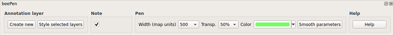

Plugin creators: Mauro Dedonatis (Urbino Univ., Italy, mauro.dedonatis@uniurb.it) and Mauro Alberti (alberti.m65 at gmail.com).
The original concept is by Mauro DeDonatis, while the implementation is by Mauro Alberti.
beePen is a Python plugin for drawing freeand annotations and sketches in an ad-hoc layer in QGis.
It is inspired by the corresponding tool in BeeGIS.
and based on the code by Pavol Kapusta in his Frehand Editing plugin. The plugin window is started by the "beePen" command (Fig. 1).
Fig. 1
beePen allows to create an annotation layer, that is characterized by three fields, storing: 1) the user-defined width (in map units); 2) the color and transparency of the pen;
3) the optional note to be associated with each element.
These value are automatically inserted based on the user choice in the plugin window (Fig. 2).

Fig. 2
To draw annotations, create a new annotation layer from the beePen window (see Fig. 2) or load an existing one with QGIS (and style it if necessary
with the "Style selected layers" command), and then draw annotations by selecting the pen tool (command with pencil icon in Fig. 3).
You can delete one or more annotations by drawing a line above them with the eraser tool (rightmost command in Fig. 3).